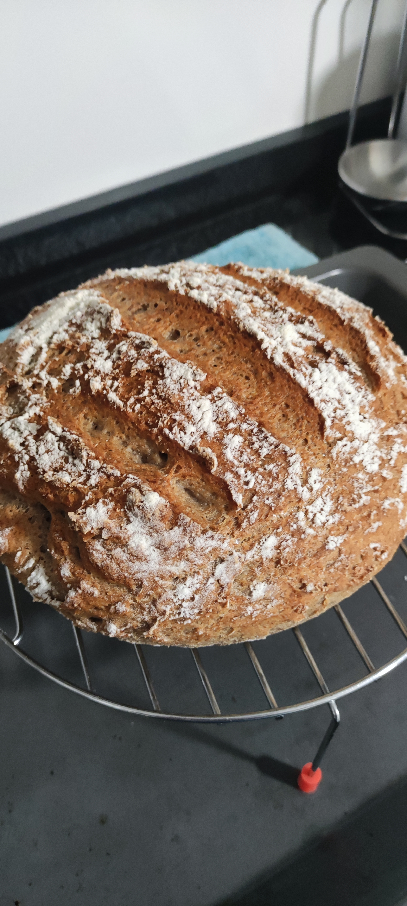
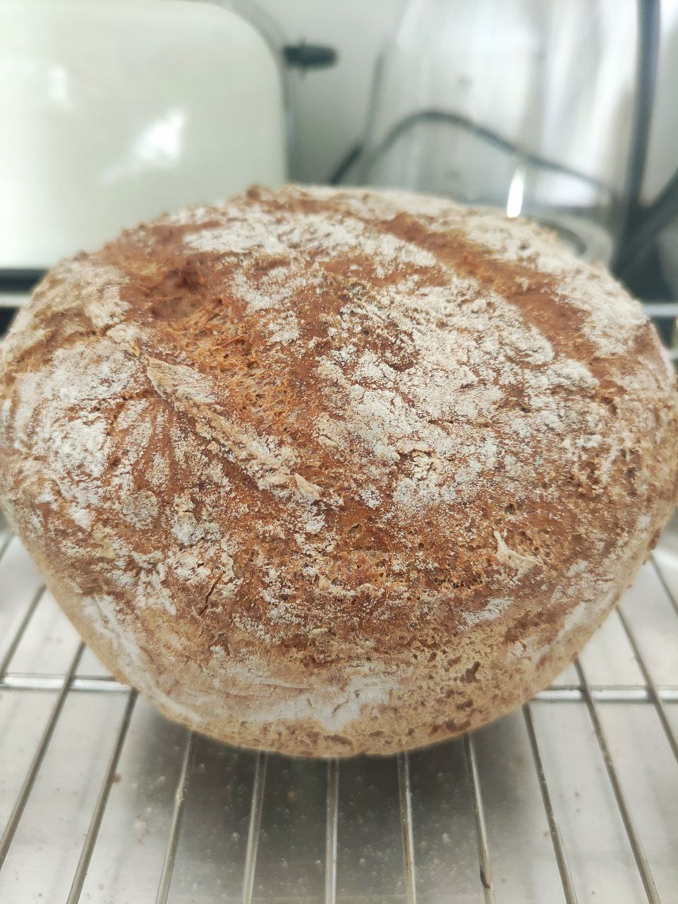

Mi pan sin gluten
Después de más de 4 años sin comer pan con tranquilidad, descubrí que podía hacerlo con trigo sarraceno.
Mi pan favorito siempre ha sido el pan moreno de Mallorca y, gracias a experimentar y compartirlo en TikTok, por fin puedo desayunar pa amb oli otra vez ✨.


Ingredientes
- 400 g harina de trigo sarraceno
- 100 g harina de arroz (blanca o integral)
- 100 g almidón de yuca (o maíz/patata)
- 25 g psyllium
- 10 g azúcar
- 10 g sal
- 10 g levadura seca (o 30 g fresca)
- 20 g AVOE
- 1 cdta vinagre sin filtrar (granada o manzana)
- 650 ml agua templada
Paso a paso
- Activa la levadura: disuélvela con el azúcar/miel en un poco de agua templada (100 ml). Espera 10–15 minutos hasta que espume.
- Hidrata el psyllium: en 200 ml de agua. Deja reposar 5 minutos hasta que forme un gel.
- Mezcla en un bol grande las harinas y la sal.
- Añade el gel de psyllium, la mezcla de levadura, el aceite, el vinagre y el resto del agua poco a poco. Amasa 6–7 minutos.
- La masa debe quedar espesa, pero húmeda y algo pegajosa.
- Fermenta tapado 1h30–2h, hasta que suba visiblemente (puedes ponerla en el horno apagado con luz encendida).
- Precalienta el horno a 200 °C y mete una bandeja con agua en la base para generar vapor
- Hornea 50–60 min. Si se dora mucho, cúbrelo con papel de aluminio al final.
- Deja enfriar sobre una rejilla al menos 3-4 hora antes de cortar.
Mis recomendaciones
- Fermentar en nevera 8–12 h si puedes → mejora la digestión y reduce FODMAPs.
- El pan gana sabor si lo dejas reposar unas horas antes de cortarlo.
- Congélalo en rebanadas para tener siempre listo un pa amb oli.
- Si las paredes del pan con el molde han quedado húmedas, sácalo del pan y hornéalo 15 minutos sin el molde, así seca la base y los lados.
- Usa un molde alto para que mantenga la forma al principio, y luego puedes cambiarlo a uno más bajo si lo deseas.